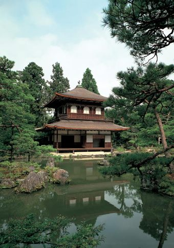

Nombre formal es Jisho-ji. Fundado en 1482 por el Shogun de Muromachi, Ashikaga Yoshimasa. El diseño muestra la influencia del Templo del Pabellón de Oro, fundado por el abuelo de Yoshimasa, Ashikaga Yoshimitsu. El jardín es inolvidable por su Ginshadan, un “mar” de arena blanca con sus suaves ondulaciones que representan las olas, y Kogetsudai, una suerte de cono de arena que semeja el Monte Fuji. La austeridad del Pabellón de Plata destaca en contraste con el brillante esplendor del Pabellón de Oro. Una visita a este templo nos ayudará a comprender el concepto estético japonés de wabi/sabi (serenidad austera, elegante simplicidad). Habría que señalar que mientras que los pisos superiores del Pabellón de Oro están recubiertos de panes de oro, no hay panes de plata en el Pabellón de Plata.
Atras